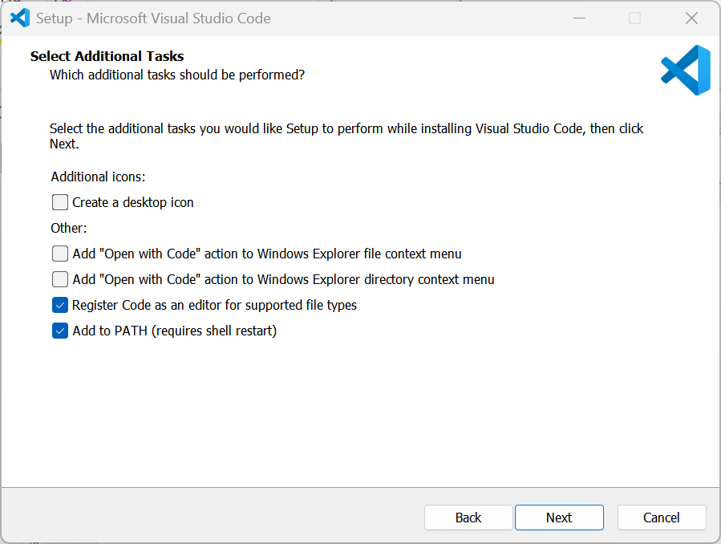
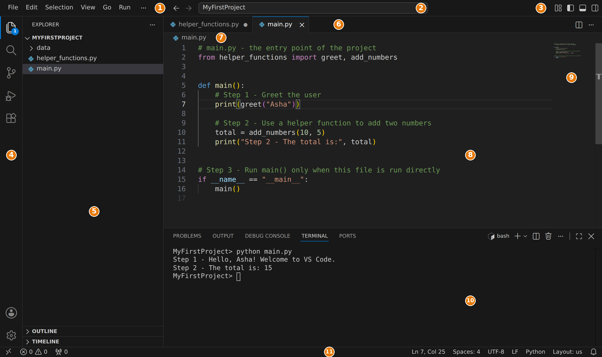
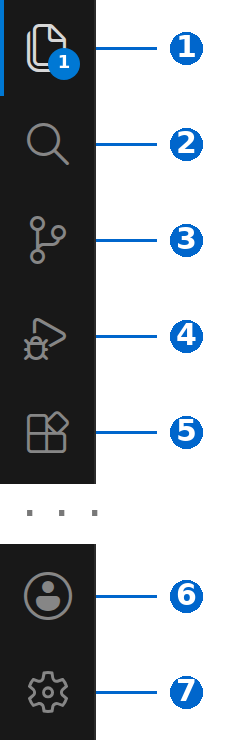
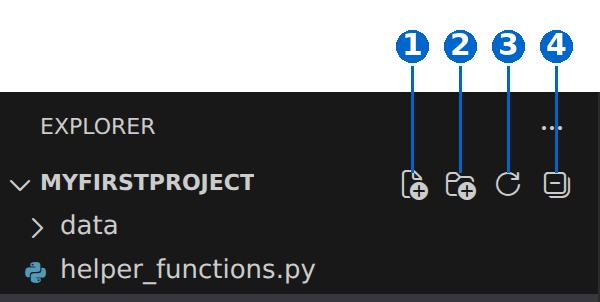
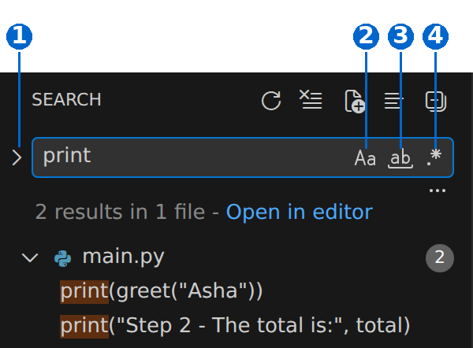
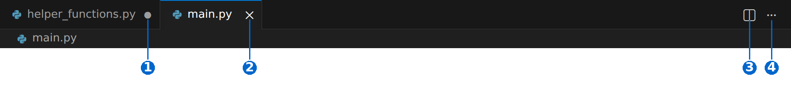
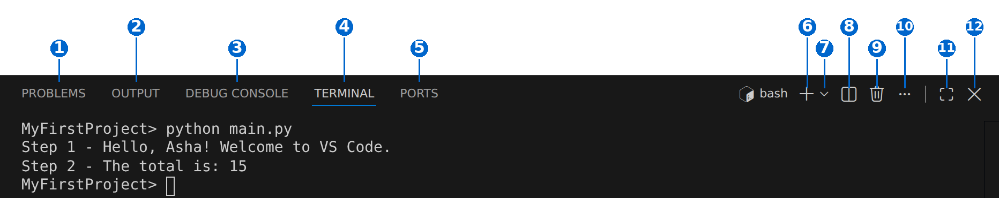

Chapter 1: Setting Up VS Code for Python (Part 1)¶
About this page
This page goes with Chapter 1 of the book, Python Basics. To write and run the programs in this book you need a good place to type your code. On the previous page you met Jupyter Notebook. This page introduces the other tool used throughout the book: Visual Studio Code, usually called VS Code.
Here is what you will find on this page:
- Installing VS Code on Windows, step by step, with notes for macOS and Linux.
- First-time setup, including a few settings that make life easier for beginners.
- A tour of the VS Code window - the Activity Bar, Side Bar, Editor, Panel and Status Bar - with numbered screenshots.
- Extensions that turn VS Code into a Python tool.
- A complete beginner workflow: installing Python, creating a project folder, writing a file and running it.
- Common beginner errors and how to fix them.
- Debugging: pausing a program, looking at its variables and running it line by line.
- Frequently asked questions about VS Code, its interface, IntelliSense (auto-complete) and the Terminal.
Why does this matter? Jupyter Notebook is excellent for trying out small pieces of code. But most real Python programs are saved as .py files, often several of them in one project folder, and run as a whole. VS Code is one of the most popular tools for this kind of work, in colleges and in industry alike. Everything you learn here - projects, the terminal, the debugger - will be used again and again in later chapters.
VS Code is updated every month, so a few buttons or menu names on your screen may look slightly different from the screenshots here. The ideas stay the same.
Table of Contents¶
- 1. VS Code Basics
- 1.1 What Is VS Code
- 1.2 Downloading VS Code (Step-by-Step)
- 1.3 Installing VS Code on Windows (Step-by-Step)
- 1.4 Other Ways to Install and Other Operating Systems
- 1.5 Checking the Installation
- 2. First-Time Setup
- 2.1 What You See the First Time
- 2.2 Useful Settings for Beginners
- 3. The VS Code Interface
- 3.1 Main Parts of the Window
- 3.2 The Activity Bar
- 3.3 The Primary Side Bar
- 3.4 The Explorer View
- 3.5 The Search View
- 3.6 The Editor Area
- 3.7 The Panel
- 3.8 The Status Bar
- 4. Important Extensions for Python Programming
- 4.1 Python (by Microsoft)
- 4.2 Pylance
- 4.3 Python Debugger
- 4.4 Jupyter
- 4.5 Code Runner (optional)
- 5. A Beginner's Python Workflow in VS Code
- 5.1 Step 1: Install Python
- 5.2 Step 2: Install VS Code
- 5.3 Step 3: Install the Python Extension in VS Code
- 5.4 Step 4: Create a Folder for Your Project
- 5.5 Step 5: Open the Folder in VS Code
- 5.6 Step 6: Create a Python File
- 5.7 Step 7: Write Your Code
- 5.8 Step 8: Open the VS Code Terminal
- 5.9 Step 9: Run Your Python Script
- 6. How to Create a Python Project
- 6.1 Step 1: Create a Folder
- 6.2 Step 2: Add Subfolders (Optional but Good Practice)
- 6.3 Step 3: Open the Folder in VS Code
- 6.4 Step 4: Add Python Files
- 6.5 Step 5: Install Required Libraries (Optional)
- 7. How to Run Python Scripts in VS Code
- 7.1 Method 1: Using the Terminal (Most Recommended)
- 7.2 Method 2: Using the Run Button
- 7.3 Method 3: Using the Code Runner Extension (Optional)
- 7.4 Which Method Should I Use
- 8. Common Beginner Errors and Quick Fixes
- 8.1 ERROR 1: "python is not recognized"
- 8.2 ERROR 2: VS Code Shows "Select Python Interpreter"
- 8.3 ERROR 3: 'pip' Not Working
- 8.4 ERROR 4: Running the Wrong File
- 8.5 ERROR 5: The VS Code Terminal Opens PowerShell
- 8.6 ERROR 6: Accidentally Created a Workspace File (.code-workspace)
- 8.7 ERROR 7: File Saved with the Wrong Extension
- 9. Debugging Python Code in VS Code
- 9.1 What Is Debugging
- 9.2 Make Sure the Python Extension Is Installed
- 9.3 Create a Small Sample File to Debug
- 9.4 Set a Breakpoint
- 9.5 Start Debugging
- 9.6 The Program Stops at the Breakpoint
- 9.7 The Debug Toolbar
- 9.8 Inspecting Variables
- 9.9 Adding More Breakpoints
- 9.10 Example Debugging Session
- 10. Debugging Common Beginner Mistakes
- 10.1 A NameError Example
- 10.2 Debugging Programs That Use input()
- 10.3 Debug Configuration (Optional)
- 10.4 Summary: VS Code Debug Steps
- 11. FAQ
- 12. FAQ: VS Code User Interface
- A. Activity Bar (Left-Most Slim Column)
- B. Side Bar and Explorer Panel
- C. Editor Area (The Main Coding Window)
- D. Tabs Bar (Top of the Editor)
- E. Status Bar (Bottom Bar)
- F. Panel (Bottom Window for Terminal, Output, Problems)
- G. Terminal Panel
- H. Problems Panel
- I. Output Panel
- J. Command Palette
- K. Extensions View
- L. Settings
- M. Minimap (Tiny Map of Code on the Right Side)
- N. Breadcrumb Bar (Top of Editor)
- O. Editor Layout Controls
- P. Hover Tooltips and Auto Suggestions
- Q. Welcome Page
- 13. VS Code IntelliSense FAQ
- 14. VS Code Terminal FAQ
- 15. Disclaimer
1. VS Code Basics¶
1.1 What Is VS Code¶
VS Code is best described as a code editor that runs on your own computer (a local desktop application). It works on Windows, macOS and Linux, and it is free.
On its own, VS Code is a smart text editor. It becomes a full Python tool once you add extensions (small add-on programs, see Section 4). With the right extensions it behaves like an IDE - an Integrated Development Environment, which means one program in which you can write, run, test and debug code.
A common source of confusion: VS Code does not include Python. You install Python separately (see Section 5.1), and VS Code then uses it.
1.2 Downloading VS Code (Step-by-Step)¶
Step 1: Go to the Official Website¶
Open your browser (Chrome, Edge, Firefox) and go to: https://code.visualstudio.com/
Always download VS Code from this official Microsoft site, never from other download websites.
Step 2: Choose Your Operating System¶
For Windows, click Download for Windows.
A file with a name like this will start downloading:
VSCodeUserSetup-x64-1.xxx.x.exe
The numbers change with every new version. x64 means it is for ordinary 64-bit Windows computers, which is what almost all laptops and desktops use.
If your laptop has an ARM processor (for example, some newer Snapdragon laptops), go to https://code.visualstudio.com/download and choose the User Installer under Arm64 instead.
Step 3: Wait for the Download to Complete¶
When the download finishes, you will find the .exe file in your Downloads folder.
1.3 Installing VS Code on Windows (Step-by-Step)¶
The flowchart below shows the whole installation at a glance. Each step is explained after it.
flowchart TD
S1["1. Double-click the installer in Downloads"] --> S2["2. Accept the licence agreement"]
S2 --> S3["3. Keep the default install folder"]
S3 --> S4["4. Keep the default Start Menu folder"]
S4 --> S5["5. Tick the additional tasks"]
S5 --> S6["6. Click Install and wait"]
S6 --> S7["7. Tick Launch Visual Studio Code and click Finish"]
S7 --> S8["8. VS Code opens with the Welcome page"]
Step 1: Double-Click the Installer¶
Open your Downloads folder and double-click the file:
VSCodeUserSetup-x64-...
If Windows asks whether you want to allow the app to make changes, click Yes.
Step 2: License Agreement¶
Select I accept the agreement, then click Next.
Step 3: Choose the Installation Location¶
Beginners should leave it as it is:
C:\Users\<YourName>\AppData\Local\Programs\Microsoft VS Code
Here <YourName> is your Windows user name. Click Next.
Step 4: Start Menu Folder¶
The installer asks where to put the Start menu shortcut. Leave it as Visual Studio Code and click Next.
Step 5: Additional Tasks (Very Important)¶
You will see a screen called Select Additional Tasks with several checkboxes.

Tick these:
| Checkbox | What it does | Tick it? |
|---|---|---|
| Create a desktop icon | Puts a VS Code shortcut on your desktop | Optional |
| Add "Open with Code" action to Windows Explorer file context menu | Lets you right-click any file and open it in VS Code | Yes |
| Add "Open with Code" action to Windows Explorer directory context menu | Lets you right-click any folder and open the whole folder in VS Code. Very handy for projects | Yes |
| Register Code as an editor for supported file types | Makes VS Code the program that opens .py and similar files when you double-click them |
Yes |
| Add to PATH (requires shell restart) | Lets you start VS Code by typing code in a command window, for example code . to open the current folder |
Yes (usually already ticked) |
A note about PATH: PATH is a list of folders that Windows searches when you type a command. Adding VS Code to PATH is what makes the code command work. It does not affect Python; Python has its own PATH setting, which is covered in Section 5.1. ("Requires shell restart" simply means that command windows that are already open will not know about code until you close and reopen them.)
Click Next.
Step 6: Install¶
Check the summary on the Ready to Install screen, then click Install and wait. It usually takes less than a minute.
Step 7: Launch¶
Tick Launch Visual Studio Code and click Finish.
Step 8: VS Code Opens¶
VS Code starts and shows a Welcome page. What to do next is explained in Section 2.
1.4 Other Ways to Install and Other Operating Systems¶
Using the command line on Windows. If you are comfortable with the command line, you can install VS Code with Windows' own package manager, winget. Open Command Prompt and type:
winget install -e --id Microsoft.VisualStudioCode
Installer types on Windows. The download page offers three kinds of Windows download:
| Type | Who it is for |
|---|---|
| User Installer | Installs for your own Windows account only. No administrator permission needed. Recommended for beginners. |
| System Installer | Installs for all users of the computer. Needs administrator permission. |
| .zip | A portable version that you unzip and run, with no installation. Does not update itself. |
macOS. Download the macOS version, open the downloaded file, and drag Visual Studio Code into the Applications folder. To use the code command, open VS Code, press Cmd + Shift + P, and run Shell Command: Install 'code' command in PATH.
Linux. Download the .deb package (Ubuntu, Debian) or .rpm package (Fedora, Red Hat) and install it with your system's software installer. Full details are in the official guide Visual Studio Code on Linux.
1.5 Checking the Installation¶
To check that VS Code and the code command are working, open a new Command Prompt window and type:
code --version
You should see three lines: the version number, a long code (called the commit ID), and x64. For example:
1.xxx.x
0a1b2c3d4e5f...
x64
If you see 'code' is not recognized..., close all command windows and try again. If it still does not work, you probably unticked Add to PATH during installation. Run the installer again and tick it.
2. First-Time Setup¶
2.1 What You See the First Time¶
When VS Code launches for the first time:
- It opens a Welcome page. This page includes:
- a Walkthrough (a short "Get Started" guide),
- a choice of colour themes (light or dark),
- buttons to create a new file, open a file, or open a folder.
- It may ask "Would you like to install the recommended extensions?" This is optional. For Python, the extensions you need are described in Section 4.
- When you open a folder, VS Code asks "Do you trust the authors of the files in this folder?" This is called Workspace Trust. It protects you from code in folders you downloaded from unknown sources. For your own project folders, click Yes, I trust the authors. For folders from unknown sources, click No; you can still read the files safely, but some features stay switched off. (More about Workspace Trust.)
- It may ask you to sign in, for example with a Microsoft or GitHub account. Signing in is not needed to write and run Python code. It is only used for extra features such as syncing your settings between computers.
You can come back to the Welcome page at any time with Help > Welcome.
2.2 Useful Settings for Beginners¶
Settings are opened with File > Preferences > Settings (or Ctrl + ,). Type the name of a setting in the search box at the top. These are worth changing on day one:
| Setting to search for | Suggested value | Why |
|---|---|---|
| Auto Save | afterDelay |
Saves your files automatically, so you never run an old, unsaved version of your program |
| Font Size (Editor: Font Size) | 16 or 18 | Makes code easier to read |
| Color Theme (or press Ctrl + K then Ctrl + T) | Any theme you like | Light themes are often easier to read in bright rooms |
3. The VS Code Interface¶
When you open a folder and a file, the VS Code window looks like the screenshot below. Each numbered part is explained in the table that follows it.

3.1 Main Parts of the Window¶
Below is the simplest explanation of each part:
| No. | Part | What it does |
|---|---|---|
| 1 | Menu Bar | The usual menus: File, Edit, Selection, View, Go, Run, Terminal and Help. Some menus hide under the three dots (...) when the window is narrow. |
| 2 | Command Center | A search box at the top. Click it to jump to any file in your project by typing part of its name, or type > to search for any command. |
| 3 | Layout controls | Small buttons to show or hide the Side Bar, the Panel and the Secondary Side Bar, and to change the layout. |
| 4 | Activity Bar | The thin strip of icons on the far left. It switches what the Side Bar shows. See Section 3.2. |
| 5 | Primary Side Bar | Shows the view chosen in the Activity Bar, such as the Explorer (your files) or Search. See Section 3.3. |
| 6 | Editor tabs | One tab for each open file, like tabs in a browser. See Section 3.6. |
| 7 | Breadcrumbs | Shows where you are: the folder, the file, and the function or class your cursor is in. Click any part to jump around. |
| 8 | Editor | The main area where you type and edit your code. |
| 9 | Minimap | A tiny picture of the whole file on the right. Click or drag in it to scroll quickly through long files. |
| 10 | Panel | The area at the bottom with the Terminal, Problems, Output and Debug Console. See Section 3.7. |
| 11 | Status Bar | The strip at the very bottom with information about the current file, such as the line number, indentation and Python version. See Section 3.8. |
3.2 The Activity Bar¶
The Activity Bar is the thin bar on the far left. Each icon opens a different view in the Side Bar. Clicking the icon of the view that is already open hides the Side Bar, which gives you more room for code; click it again to bring it back.

The icons typically found here are (from top to bottom):
| No. | Icon | Name | Shortcut | What it does |
|---|---|---|---|---|
| 1 | Two sheets of paper | Explorer | Ctrl + Shift + E | Shows the files and folders of your current project (workspace). The small number on the icon, if you see one, is the count of unsaved files. |
| 2 | Magnifying glass | Search | Ctrl + Shift + F | Search, and replace, text across all files in your project. |
| 3 | Branch shape | Source Control | Ctrl + Shift + G | Manages version control for your project with Git (a tool that keeps a history of changes). You can stage, commit and manage branches. |
| 4 | Play button with a bug | Run and Debug | Ctrl + Shift + D | Starts and controls debugging sessions. See Section 9. |
| 5 | Four squares | Extensions | Ctrl + Shift + X | Browse, install and manage extensions that add new features. |
| 6 | Person | Accounts (at the bottom) | none | Manages signed-in accounts, such as Microsoft or GitHub. |
| 7 | Gear wheel | Manage (at the bottom) | none | Opens Settings, Keyboard Shortcuts, Themes and other options. |
Extensions can add more icons. For example, the Python extension adds a Testing icon (a laboratory flask), and you may also see a Chat icon for AI features. You can right-click the Activity Bar to show or hide icons.
3.3 The Primary Side Bar¶
The Side Bar displays the view currently selected in the Activity Bar - the Explorer, Search results, Source Control and so on. The buttons at the top of the Side Bar change depending on the view.
The two views you will use most are described below.
3.4 The Explorer View¶
When you click Explorer, you see:
- your opened folder, with the files inside it,
- sections such as Outline (the functions and classes in the current file) and Timeline (the saved history of the current file) at the bottom.
This view is useful for Python beginners because you can:
- create new files,
- create folders,
- see your whole project structure at a glance.
When you move the mouse over the folder name, four small buttons appear:

| No. | Icon | Name | What it does |
|---|---|---|---|
| 1 | Sheet of paper with a plus | New File | Creates a new file in the selected folder. Type the name, including .py, and press Enter. |
| 2 | Folder with a plus | New Folder | Creates a new folder in the selected folder. |
| 3 | Circular arrow | Refresh Explorer | Reloads the file list, to show changes made outside VS Code. |
| 4 | Box with a minus | Collapse Folders in Explorer | Closes all open folders in the tree. |
To delete, rename, copy or move a file, right-click it. You can also drag files between folders.
There is also an Open Editors section that lists every open file. It is hidden by default; to show it, click the three dots (...) at the top of the Explorer and tick Open Editors.
3.5 The Search View¶
The Search view looks for text in every file of your project at once. Type a word in the box; the results are listed below it, grouped by file. Click a result to jump to that line.

| No. | Icon | Name | Shortcut | What it does |
|---|---|---|---|---|
| 1 | Small arrow on the left of the box | Toggle Replace | none | Shows a second box, so that you can replace the text you searched for. |
| 2 | Aa |
Match Case | Alt + C | Makes the search case-sensitive, so Print does not match print. |
| 3 | ab with a line under it |
Match Whole Word | Alt + W | Matches only whole words, so searching total does not find subtotal. |
| 4 | .* |
Use Regular Expression | Alt + R | Lets you search with regular-expression patterns (a special pattern language you will meet in a later chapter). |
To search only inside the current file, press Ctrl + F in the editor instead.
3.6 The Editor Area¶
This is the main area where you view and edit your code. It has one or more open file tabs, like browser tabs, and a few controls.

| No. | What you see | Meaning |
|---|---|---|
| 1 | A dot (filled circle) on a tab | The file has changes that are not saved yet. Press Ctrl + S to save. |
| 2 | A cross (X) on a tab | Closes the file. It appears on the active tab, or when you move the mouse over a tab. |
| 3 | Two boxes side by side | Split Editor: shows the file twice, side by side, so that you can look at two places at once. |
| 4 | Three dots | More Actions: a menu with more commands, such as closing all tabs. |
When a Python file is open and the Python extension is installed, you also see a Run button (a triangle) at the top right of the editor. See Section 7.2.
The Breadcrumbs line just below the tabs and the Minimap on the right were described in Section 3.1.
3.7 The Panel¶
The Panel appears at the bottom of the window. It holds several views, and you switch between them using the tabs. Press Ctrl + J to show or hide the whole Panel.

| No. | Tab or button | What it does |
|---|---|---|
| 1 | Problems | Lists errors, warnings and style issues found in your code. Click one to jump to that line. |
| 2 | Output | Shows messages from VS Code itself and from extensions. (Your program's output does not appear here; it appears in the Terminal.) |
| 3 | Debug Console | Used while debugging, to type Python expressions and see their values. See Section 9.8. |
| 4 | Terminal | A command line inside VS Code, where you run programs and install packages. See the Terminal FAQ. |
| 5 | Ports | Used when a program runs a web server. Beginners can ignore it. |
| 6 | New Terminal (plus sign) | Opens another terminal. |
| 7 | Launch Profile (small arrow) | Opens a new terminal of a chosen type, such as Command Prompt or PowerShell, and lets you choose the default. |
| 8 | Split Terminal | Shows two terminals side by side. |
| 9 | Kill Terminal (bin) | Closes the terminal completely. |
| 10 | More Actions (three dots) | More options, such as clearing the terminal. |
| 11 | Maximize Panel | Makes the Panel fill most of the window. Click again to restore it. |
| 12 | Close Panel (X) | Hides the Panel. The terminal keeps running; press Ctrl + ` to bring it back. |
3.8 The Status Bar¶
The Status Bar sits at the very bottom of the window. It shows information about the open file and project. Most items can be clicked.
| What you see (example) | Name | What it does |
|---|---|---|
A branch icon with main |
Git branch | Shows the current Git branch, if the folder uses Git. Click to switch or create branches. |
A cross and a triangle with numbers, such as 0 and 3 |
Problems | The number of errors and warnings. Click to open the Problems panel. |
Ln 10, Col 25 |
Cursor position | The line and column where your cursor is. Click to go to a particular line. |
Spaces: 4 |
Indentation | Shows whether the file uses spaces or tabs, and how many. Click to change it. |
UTF-8 |
Encoding | The way letters are stored in the file. Leave it as UTF-8. |
CRLF or LF |
Line endings | How the end of each line is stored (Windows uses CRLF). Beginners can ignore it. |
Python |
Language mode | The language VS Code thinks the file is written in. Click to change it. |
3.12.4 64-bit or 3.12.4 ('.venv') |
Python interpreter | Which Python will run your code. Appears when a Python file is open and the Python extension is installed. Click to choose another one. See Section 8.2. |
| A bell | Notifications | Messages from VS Code and extensions. |
If you have installed Python and the Python extension, VS Code detects Python automatically and shows its version here.
4. Important Extensions for Python Programming¶
Extensions add new features to VS Code. To install one:
- Click the Extensions icon in the Activity Bar (or press Ctrl + Shift + X).
- Type the name of the extension in the search box.
- Check that the publisher is correct (for Python, look for Microsoft with a blue tick).
- Click Install.
4.1 Python (by Microsoft)¶
The most important one. It gives you:
- colour highlighting of Python code,
- a way to run scripts (the Run button),
- support for Jupyter notebooks (together with the Jupyter extension),
- auto-complete and error checking,
- a way to choose which Python to use (the interpreter).
When you install it, VS Code automatically installs two more extensions with it: Pylance and Python Debugger.
4.2 Pylance¶
Pylance is the "language server" for Python. It powers IntelliSense: better auto-complete, pop-up help about functions, and early warnings about mistakes such as misspelt names. It is installed automatically with the Python extension. (More in the IntelliSense FAQ.)
4.3 Python Debugger¶
Lets you pause a program, step through it line by line, and look at its variables. Also installed automatically. See Section 9.
4.4 Jupyter¶
Lets you open and run .ipynb notebooks inside VS Code, in the same way as in Jupyter Notebook (see the previous page). VS Code usually suggests it the first time you open a notebook.
4.5 Code Runner (optional)¶
Adds a button to run code with one click, for many languages. It is optional and not needed for Python, since the Python extension already has a Run button. If you use it, turn on its setting Run In Terminal (search for code-runner.runInTerminal in Settings). Otherwise it shows the output in the Output panel, where programs that use input() cannot receive what you type.
5. A Beginner's Python Workflow in VS Code¶
This is the simplest workflow for complete beginners. The flowchart shows it at a glance; the steps are explained below it.
flowchart TD
S1["1. Install Python"] --> S2["2. Install VS Code"]
S2 --> S3["3. Install the Python extension"]
S3 --> S4["4. Create a project folder"]
S4 --> S5["5. Open the folder in VS Code"]
S5 --> S6["6. Create a file such as main.py"]
S6 --> S7["7. Write your code and save it"]
S7 --> S8["8. Open the Terminal"]
S8 --> S9["9. Run python main.py"]
S9 --> S10{"10. Did it work?"}
S10 -->|Yes| S11["11. Done - change the code and run again"]
S10 -->|No| S12["12. Read the error and see Section 8"]
S12 --> S7
5.1 Step 1: Install Python¶
Download Python from: https://www.python.org/downloads/
On Windows there are now two ways to install Python.
Option A: the Python install manager (recommended from Python 3.14 onwards)
- On the download page, click the button to download the Python install manager. (It is also available in the Microsoft Store, under the name Python Install Manager.)
- Open the downloaded file and click Install.
- Open a new Command Prompt and type
python. The first time, the install manager may ask you a few questions, for example whether to add a folder to your PATH and whether to install the latest version of Python. Answer Yes (typeyand press Enter). - When you see the Python prompt
>>>, typeexit()to leave it.
The install manager gives you the python and py commands, and makes it easy to install more versions later (for example py install 3.13). More details are in the official guide Using Python on Windows.
Option B: the traditional installer
The traditional installer (a .exe file for one Python version) is still available, but it is being phased out: no new ones will be made from Python 3.16 onwards. If you use it:
- Run the downloaded
.exefile. - On the first screen, at the bottom, tick Add python.exe to PATH (very important).
- Click Install Now.
Check the installation
Open a new Command Prompt and type:
python --version
You should see something like:
Python 3.14.7
(If you already installed Anaconda, as described on the previous page, you can also use Anaconda's Python in VS Code. Choose it as the interpreter, as shown in Section 8.2.)
5.2 Step 2: Install VS Code¶
See Section 1.
5.3 Step 3: Install the Python Extension in VS Code¶
- Open VS Code and click the Extensions icon in the Activity Bar (four squares).
- Search for Python.
- Install the official extension from Microsoft.
5.4 Step 4: Create a Folder for Your Project¶
For example:
D:\Python_Projects\MyFirstProject
This folder will hold all the code files of this project. Keep one folder for each project.
Tip: avoid spaces and special characters in folder names. MyFirstProject or my_first_project is better than My First Project!.
5.5 Step 5: Open the Folder in VS Code¶
In VS Code, choose File > Open Folder and select your folder. (If you ticked the "Open with Code" option during installation, you can also right-click the folder in File Explorer and choose Open with Code.)
This is important because VS Code works best with a workspace folder - the folder that holds your project. The Explorer, the Terminal and the Python extension all start from this folder. If VS Code asks whether you trust the authors of the files, click Yes (see Section 2.1).
5.6 Step 6: Create a Python File¶
In the Explorer:
- Click the New File button (see Section 3.4).
- Type the name
main.pyand press Enter.
The name must end in .py, so that VS Code knows it is a Python file.
5.7 Step 7: Write Your Code¶
Type:
print("Hello World!")
Save the file with Ctrl + S (unless you have turned on Auto Save).
5.8 Step 8: Open the VS Code Terminal¶
Shortcut:
Ctrl + `
(The backtick key ` is usually just below the Esc key, to the left of 1.) You can also use the menu Terminal > New Terminal.
A terminal opens in the Panel at the bottom, already inside your project folder.
5.9 Step 9: Run Your Python Script¶
Type:
python main.py
and press Enter.
You will see:
Hello World!
That's it - you have completed the basic workflow!
6. How to Create a Python Project¶
Here are the recommended steps for beginners.
6.1 Step 1: Create a Folder¶
For example:
C:\Python\My_App
6.2 Step 2: Add Subfolders (Optional but Good Practice)¶
A small project might look like this:
My_App/
├── main.py
├── helper_functions.py
└── data/
Every project with more than one file needs an entry point - the file you run to start the program. By convention, though it is not required, the entry point is often named main.py. Why do we use this name?
- It is clear to people and to tools. The name
main.pyserves a clear purpose for both humans and tools. - It identifies the entry point. It immediately tells anyone reading the project (another developer, a user, or your future self) that this file contains the main logic that starts everything.
- It makes running the program easy. When you run a project from the command line, you must say which file to run. A consistent name makes this simple:
python main.py. - It keeps larger projects tidy. When a program grows and is later turned into a package (a set of files that can be installed and shared, for example with tools such as setuptools), you need to say which function starts the program. Keeping the starting code in one clearly named place makes this easy. (A related special name,
__main__.py, is used when a whole folder is run withpython -m foldername. You will meet packages in a later chapter.)
6.3 Step 3: Open the Folder in VS Code¶
Choose File > Open Folder and select My_App.
6.4 Step 4: Add Python Files¶
For example:
main.py- the main programhelper_functions.py- reusable functionsconfig.py- any settings
Here is a small working example of a two-file project. First, the helper file:
# helper_functions.py - small reusable functions
def greet(name):
"""Return a greeting for the given name."""
return f"Step 1 - Hello, {name}! Welcome to VS Code."
def add_numbers(x, y):
"""Return the sum of two numbers."""
return x + y
Next, the entry point, which imports (borrows) the functions from the helper file:
# main.py - the entry point of the project
from helper_functions import greet, add_numbers
def main():
# Step 1 - Greet the user
print(greet("Asha"))
# Step 2 - Use a helper function to add two numbers
total = add_numbers(10, 5)
print("Step 2 - The total is:", total)
# Step 3 - Run main() only when this file is run directly
if __name__ == "__main__":
main()
Run it from the terminal with python main.py.
Output:
Step 1 - Hello, Asha! Welcome to VS Code.
Step 2 - The total is: 15
A word about the last two lines. Python gives every file a special variable called __name__. When you run a file directly (python main.py), its __name__ is "__main__", so main() is called. When the same file is imported by another file, its __name__ is its own file name instead, and main() is not called automatically. This line is a common Python habit that keeps a file both runnable and importable. You will meet it again in the chapter on modules.
Both files must be in the same folder for the import to work.
6.5 Step 5: Install Required Libraries (Optional)¶
If your project needs extra packages, install them in the VS Code terminal:
pip install requests
pip install numpy
If pip does not work, use python -m pip install requests instead (see Section 8.3).
7. How to Run Python Scripts in VS Code¶
There are three beginner methods.
7.1 Method 1: Using the Terminal (Most Recommended)¶
Open the terminal:
Ctrl + `
Run:
python main.py
Why this method is best:
- it always works,
- it is the most reliable,
- it teaches the real-world way of running programs, which you will also use outside VS Code.
7.2 Method 2: Using the Run Button¶
When a Python file is open, VS Code shows a Run Python File button (a triangle) at the top right of the editor. This button appears only when the Python extension is installed.
Click it. VS Code runs the file in the Terminal, and the output appears there. The small arrow next to the button gives more choices, such as Run Python File in Dedicated Terminal and Python Debugger: Debug Python File.
You can also press Ctrl + F5 (Run > Run Without Debugging).
7.3 Method 3: Using the Code Runner Extension (Optional)¶
Install Code Runner; a play button appears at the top right of the editor. Click it to run the code with one click.
It is not recommended for serious work, but beginners like it. Remember to turn on its Run In Terminal setting, as explained in Section 4.5.
7.4 Which Method Should I Use¶
| Method | How | Output appears in | Works with input() |
Best for |
|---|---|---|---|---|
| Terminal | Type python main.py |
Terminal | Yes | Everyone; the most reliable |
| Run button | Click the triangle, or Ctrl + F5 | Terminal | Yes | Quick runs of the current file |
| Code Runner | Click its play button | Output panel (or Terminal if set) | Only with Run In Terminal on | Quick tests |
8. Common Beginner Errors and Quick Fixes¶
These are the most common problems Indian beginners face on Windows.
The flowchart below helps with the most common one: the python command not working.
flowchart TD
A["1. Type python --version in a new terminal"] --> B{"2. What happens?"}
B -->|"Shows a version"| C["3. Python works - carry on"]
B -->|"Not recognized"| D["4. Try py --version"]
B -->|"Microsoft Store opens"| E["7. Python is not installed - install it, see Section 5.1"]
D --> F{"5. Does py work?"}
F -->|Yes| G["6. Use py instead of python, or fix PATH, see Section 8.1"]
F -->|No| E
8.1 ERROR 1: "python is not recognized"¶
Cause: Windows cannot find Python. Either Python is not installed, or it was installed without adding it to PATH.
Fix, Option A: Reinstall Python and make sure it is added to PATH. With the traditional installer, tick Add python.exe to PATH on the first screen. With the Python install manager, answer Yes when it offers to add its folder to PATH. (See Section 5.1.)
Fix, Option B: Add Python to PATH manually. To do so:
- Click Start and search for Edit environment variables for your account. Open it. (This changes settings only for your own account, so no administrator permission is needed.)
- Under User variables, select Path and click Edit.
- Click New and add the Python folders. For the traditional installer these are:
C:\Users\<YourName>\AppData\Local\Programs\Python\Python3xx\
C:\Users\<YourName>\AppData\Local\Programs\Python\Python3xx\Scripts\
Replace <YourName> with your Windows user name and Python3xx with your version, for example Python313. For the Python install manager, the folder is:
C:\Users\<YourName>\AppData\Local\Python\bin
- Click OK on every window, then close and reopen VS Code and all command windows.
Quick workaround: on Windows, py often works even when python does not. Try py main.py instead of python main.py.
If typing python opens the Microsoft Store: Windows is telling you that Python is not installed. Install it as described in Section 5.1.
8.2 ERROR 2: VS Code Shows "Select Python Interpreter"¶
An interpreter is the Python program that actually runs your code. You may have more than one on your computer (for example, Python from python.org and Python from Anaconda), so VS Code needs to know which one to use.
Fix:
- Open a
.pyfile. - Click the Python version in the Status Bar at the bottom right (or, if nothing is shown there, press Ctrl + Shift + P and type Python: Select Interpreter).
- Pick the correct interpreter from the list, for example:
Python 3.14.7 C:\Users\YourName\AppData\Local\...
If your Python is not in the list, choose Enter interpreter path... and browse to python.exe.
8.3 ERROR 3: 'pip' Not Working¶
Run pip through Python instead:
python -m pip install <package>
For example:
python -m pip install requests
This form also makes sure the package goes into the same Python that runs your code.
8.4 ERROR 4: Running the Wrong File¶
Beginners often write code in one file but run another, and then wonder why nothing changed.
Fix: Always check the name of the file in your command:
python <your current file>.py
Also make sure the file is saved (no dot on its tab) before you run it.
8.5 ERROR 5: The VS Code Terminal Opens PowerShell¶
On Windows, the VS Code terminal opens PowerShell by default. This is usually fine. But PowerShell may refuse to run the script that activates a virtual environment, with a message such as "running scripts is disabled on this system".
Fix 1 (switch to Command Prompt): In the Panel, click the small arrow next to the + button and choose Command Prompt. To make it the default, choose Select Default Profile from the same menu and pick Command Prompt.
Fix 2 (allow scripts in PowerShell): Run this command once in PowerShell, then open a new terminal:
Set-ExecutionPolicy -Scope CurrentUser RemoteSigned
8.6 ERROR 6: Accidentally Created a Workspace File (.code-workspace)¶
A file ending in .code-workspace is a saved list of folders. It is harmless. Just close VS Code and reopen your project with File > Open Folder. You can delete the file if you do not need it.
8.7 ERROR 7: File Saved with the Wrong Extension¶
Beginners sometimes end up with names like:
main.py.txt
This happens especially when a file is created in Notepad. Python will not treat it as a Python file.
Fix: Rename it to main.py (right-click it in the Explorer and choose Rename). In Windows File Explorer, turn on View > Show > File name extensions so that you can always see the real ending of a file name.
9. Debugging Python Code in VS Code¶
9.1 What Is Debugging¶
Debugging means:
- finding mistakes in your program,
- stopping the program at chosen points,
- checking the values of variables,
- running the program line by line.
The flowchart below shows the usual cycle. Each step is explained in the sections that follow.
flowchart TD
S1["1. Open the Python file"] --> S2["2. Click in the margin to set a breakpoint"]
S2 --> S3["3. Press F5 to start debugging"]
S3 --> S4["4. Program pauses at the breakpoint"]
S4 --> S5["5. Look at variables - hover, Variables, Watch"]
S5 --> S6["6. Step Over, Step Into or Continue"]
S6 --> S7{"7. Found the mistake?"}
S7 -->|Yes| S8["8. Stop, fix the code and run again"]
S7 -->|No| S9["9. Add more breakpoints"]
S9 --> S3
9.2 Make Sure the Python Extension Is Installed¶
In the Activity Bar, click Extensions and search for Python. Install the Microsoft Python extension. It installs the Python Debugger extension for you.
9.3 Create a Small Sample File to Debug¶
Create a file called debug_example.py and type:
# debug_example.py - a small program to practise debugging
# Step 1 - Define a function that adds two numbers
def add(x, y):
result = x + y # Step 2 - Put a second breakpoint here
return result
# Step 3 - Create two variables
a = 10
b = 5
print("Step 3 - a is", a, "and b is", b)
# Step 4 - Call the function (put the first breakpoint on this line)
total = add(a, b)
# Step 5 - Show the result
print("Step 5 - The total is:->", total)
If you simply run it, you see:
Step 3 - a is 10 and b is 5
Step 5 - The total is:-> 15
9.4 Set a Breakpoint¶
A breakpoint tells the debugger to pause your program just before it runs that line.
How to set one:
- Move your mouse to the left margin, just left of the line number of
total = add(a, b). A faint red dot appears. - Click. The dot turns solid red. That is your breakpoint.
- To remove it, click the red dot again.
9.5 Start Debugging¶
Click the Run and Debug icon in the Activity Bar (a play button with a bug), then click Run and Debug. Or simply press F5.
First time only: VS Code may ask you to Select debugger - choose Python Debugger. It may then ask you to select a debug configuration - choose Python File ("Debug the currently active Python file"). In older versions this is called Python: Current File.
9.6 The Program Stops at the Breakpoint¶
The program runs until it reaches the breakpoint and then pauses. The line it stopped on is highlighted in yellow, with a yellow arrow in the margin. That line has not run yet.
Notice that the first print() has already run, so the Terminal shows Step 3 - a is 10 and b is 5, but the final line has not appeared yet.
You can now inspect everything.
9.7 The Debug Toolbar¶
When the program is paused, a small debug toolbar appears at the top of the window:
| Button | Shortcut | What it does |
|---|---|---|
| Continue (play) | F5 | Runs normally until the next breakpoint, or to the end. |
| Step Over (curved arrow over a dot) | F10 | Runs the current line and stops at the next one. If the line calls a function, the whole function runs without stopping inside it. |
| Step Into (arrow pointing down to a dot) | F11 | If the line calls a function, goes inside it and stops at its first line. |
| Step Out (arrow pointing up from a dot) | Shift + F11 | Finishes the current function and stops just after the place it was called from. |
| Restart (circular arrow) | Ctrl + Shift + F5 | Starts the program again from the beginning. |
| Stop (red square) | Shift + F5 | Ends the debugging session. |
While debugging, the Status Bar changes colour (for example to orange or blue, depending on your colour theme) to remind you that a debug session is running.
9.8 Inspecting Variables¶
When debugging, you often want to see what your variables hold at a certain moment. VS Code gives you several ways to do this. The first four are panels in the Run and Debug view on the left.
A. Variables
This panel automatically shows the current value of all Local variables (variables defined inside the current function) and Global variables (variables defined in the main part of the file). As you step through the code, the values update, and a changed value is briefly highlighted.
B. Watch
When you debug code, sometimes you want to keep an eye on certain variables without adding print() statements or searching for them in the Variables list. The Watch panel lets you do exactly that.
- Click the Add Expression button (a + sign) in the Watch panel.
- Type the name of a variable (for example
total) or an expression (for examplea + b, orlen(my_list) > 5). - The value is shown, and it is updated automatically every time the debugger pauses.
Watch expressions are useful to:
- track how a value changes over time,
- find logic errors (the program runs, but gives the wrong answer),
- avoid adding temporary
print()statements, - look inside lists, dictionaries and other objects easily.
If the Watch panel is not visible, open View > Run and look for the WATCH heading in the Side Bar.
C. Call Stack
This panel shows the chain of function calls that led to the current line. For example, while paused inside add(), it shows add on top and <module> (the main part of the file) below it. This helps you understand how the program got there.
D. Breakpoints
This panel lists all your breakpoints, so that you can switch them on or off. It also has a box called Uncaught Exceptions, which is ticked by default. It makes the debugger stop automatically at any line that causes an error (see Section 10.1).
E. Debug Console
In the Debug Console tab of the Panel you can type any Python expression while the program is paused, and see its value at once. For example, type a * 2 and press Enter to see 20. You can even change a variable, for example b = 100.
F. Hover to Inspect Variables
Simply place your mouse over any variable in the code. For example, hover over a and a small pop-up shows:
10
Very useful!
9.9 Adding More Breakpoints¶
You can add as many breakpoints as you like, on different lines. For example, add one inside the function, on the line:
result = x + y
Now the debugger will also stop inside the function when it is called.
9.10 Example Debugging Session¶
Here is a complete session with debug_example.py, with breakpoints on total = add(a, b) and on result = x + y:
| Step | You do | What you see |
|---|---|---|
| 1 | Press F5 | The program starts. The Terminal shows Step 3 - a is 10 and b is 5. |
| 2 | (automatic) | Execution stops at total = add(a, b). Variables shows a = 10, b = 5. |
| 3 | Hover over a |
A pop-up shows 10. |
| 4 | Press F11 (Step Into) | The debugger goes inside add(). Variables now shows x = 10, y = 5, and Call Stack shows add. |
| 5 | Press F10 (Step Over) | result = x + y runs. Variables shows result = 15. |
| 6 | Press F10 again | The return line runs; you are back in the main part of the file. |
| 7 | Press F5 (Continue) | The program finishes. The Terminal shows Step 5 - The total is:-> 15. |
10. Debugging Common Beginner Mistakes¶
10.1 A NameError Example¶
Here is a program with a common mistake:
# name_error_example.py - a program with a mistake
def add(x, y):
result = x + y
return result
total = add(10, 5)
print("The total is:", total)
print(result) # Mistake: 'result' only exists inside add()
The variable result was created inside the function add(), so it only exists inside that function. The last line tries to use it outside, where it was never defined.
If you run it with python name_error_example.py, you see (the folder path will be your own):
The total is: 15
Traceback (most recent call last):
File "C:\Python_Projects\MyFirstProject\name_error_example.py", line 10, in <module>
print(result) # Mistake: 'result' only exists inside add()
^^^^^^
NameError: name 'result' is not defined
How to read this traceback (Python's error report):
- Start at the last line: it names the error (
NameError) and gives the reason. - The line above shows the code that failed, and the
^^^^^^marks point to the problem. - The
File ... line 10part tells you where to look.
If you run the same program with the debugger (F5), it stops on the line that caused the error, highlights it, and shows the error message in a box. The Variables and Call Stack panels then show the state of the program at the moment of the error, which helps you understand why it failed.
The fix here is to print total instead of result, or to use the value that add() returns.
10.2 Debugging Programs That Use input()¶
If your script uses input(), for example:
name = input("Enter your name: ")
print("Hello,", name)
then, when you debug it, the program pauses at input() and waits for you to type in the Terminal. Click inside the Terminal, type your answer and press Enter:
Enter your name: Asha
Hello, Asha
If nothing seems to happen while debugging, look at the Terminal - the program is probably waiting for your input.
10.3 Debug Configuration (Optional)¶
VS Code may create a file called .vscode/launch.json in your project. This file stores debug configurations - saved instructions for how to start debugging.
Beginners do NOT need to edit it. When asked, just choose Python File (called Python: Current File in older versions), which always debugs the file that is currently open.
10.4 Summary: VS Code Debug Steps¶
- Open your Python file.
- Set a breakpoint (click in the margin to get a red dot).
- Press F5 (Run and Debug).
- The program pauses at the breakpoint.
- Inspect variables (hover, Variables, Watch).
- Step line by line (F10, F11).
- Find and fix the mistake, then run again.
11. FAQ¶
(Frequently Asked Questions)
1. What is VS Code?¶
VS Code (Visual Studio Code) is a free, lightweight code editor made by Microsoft. It is not a full, heavyweight IDE like PyCharm, but it becomes powerful when you add extensions (plug-ins).
2. Is VS Code free to download?¶
Yes, 100% free. You can use it forever - there is no trial period and no subscription.
3. Where should I download VS Code from?¶
Always download it from the official Microsoft website: https://code.visualstudio.com/. Never download it from third-party websites, which may bundle unwanted software.
4. What version should I download for Windows?¶
Choose the User Installer (64-bit), which is what the big Download for Windows button gives you. It is the simplest and is recommended for beginners. (If your laptop has an ARM processor, choose the ARM64 User Installer instead.)
5. How do I install VS Code after downloading?¶
Steps:
- Double-click the downloaded
.exefile. - Accept the licence.
- Click Next, Next, tick the additional tasks, and click Install.
- When the installation completes, tick Launch Visual Studio Code.
- Click Finish. That's it!
The full steps, with explanations, are in Section 1.3.
6. Do I need to install Python before using VS Code?¶
Yes. VS Code does not include Python. Download Python from https://www.python.org/downloads/. If you use the traditional installer, make sure you tick Add python.exe to PATH (very important on Windows). If you use the newer Python install manager, answer Yes when it offers to update PATH. See Section 5.1. Anaconda's Python also works.
7. Do I need to add Python to PATH manually?¶
If you added Python to PATH during installation, no. If not, typing python in the terminal will not work, although the Python extension can often still find Python on its own. To fix it, either reinstall Python with the PATH option turned on, or add it by hand as shown in Section 8.1.
8. How do I check if Python is installed correctly?¶
Open Command Prompt and type:
python --version
If it shows a version such as Python 3.14.7, you're good. If you see 'python' is not recognized..., Python's PATH is not set; see Section 8.1.
9. How do I install Python extension in VS Code?¶
Open VS Code, click the Extensions icon in the Activity Bar, and search for Python. Click Install on the official Microsoft Python extension. VS Code will now:
- detect Python,
- enable debugging,
- enable IntelliSense (auto-complete),
- show errors and warnings.
10. Do I need any other extensions as a beginner?¶
Not required. But recommended:
- Python (by Microsoft), which also installs Pylance (better auto-complete) and Python Debugger,
- Jupyter (for notebook-style code).
11. VS Code says "Python not found". What should I do?¶
Try the following:
- Close VS Code.
- Reinstall Python with the PATH option turned on (see Section 5.1).
- Reopen VS Code.
- Press Ctrl + Shift + P and type Python: Select Interpreter.
- Choose the Python version installed on your PC.
This solves most problems.
12. Should I use VS Code or PyCharm as a beginner?¶
Either works, but VS Code is a good first choice because it is:
- lighter,
- easier to find your way around,
- quick to install,
- able to run well on ordinary laptops,
- easy for school and college beginners.
PyCharm is very powerful, but heavier.
13. Will VS Code slow down my computer?¶
No. It is one of the lighter code editors. It can become slow if you install many extensions or open very large folders, so install only the extensions you need.
14. Do I need internet to use VS Code?¶
Only for downloading VS Code and installing extensions and Python packages. After that, you do not need the internet to write or run code.
15. Can I run Python scripts inside VS Code?¶
Yes. Open your .py file and click the Run button (triangle) at the top right, or press Ctrl + F5. See Section 7 for all the methods.
16. What if I open VS Code and see a blank screen?¶
You probably have no folder open. Open a folder, not just individual files:
- Click File > Open Folder.
- Select your project folder.
- Now VS Code will show your files in the Explorer and work properly.
17. Is VS Code safe to install in college computers?¶
Yes. VS Code comes from Microsoft and is widely used in:
- engineering colleges,
- IITs,
- coaching institutes,
- professional companies.
On shared computers, the college may need to install it for you if you do not have permission to install software.
18. Do I need admin permission to install VS Code?¶
Usually no, if you download the User Installer version, because it installs only for your own account.
19. Why is VS Code not detecting my new Python installation?¶
Try these fixes:
- Restart VS Code.
- Restart Windows.
- Select the interpreter manually (Ctrl + Shift + P, then Python: Select Interpreter).
- Reinstall Python with the PATH option turned on.
20. Does VS Code automatically update?¶
Yes. On Windows, VS Code downloads updates in the background and asks you to restart to apply them. Updates come about once a month and are usually small and fast.
12. FAQ: VS Code User Interface¶
Below are frequently asked questions about each major part of the VS Code window. The parts are shown in the screenshot in Section 3.
A. Activity Bar (Left-Most Slim Column)¶
What is the Activity Bar?¶
It's the thin vertical bar on the far left, with icons such as Explorer, Search, Source Control, Run and Debug, and Extensions. See Section 3.2.
What does it do?¶
It switches between different "views" in the Side Bar.
Can I hide or show icons?¶
Yes. Right-click the Activity Bar and tick or untick the icons.
Can I move it to the bottom?¶
Yes. Open Settings, search for Activity Bar Location, and choose top, bottom or hidden. (Choose default to put it back on the left.)
B. Side Bar and Explorer Panel¶
What is the Explorer panel?¶
It shows all the files and folders in your project.
My files are not appearing. Why?¶
You opened only a file, not the folder. Fix: File > Open Folder.
Folders look collapsed. How to expand?¶
Click the small arrow next to the folder name.
How to create a new file or folder?¶
Move the mouse over the folder name at the top of the Explorer and use the buttons that appear:
- New File
- New Folder
To delete a file, right-click it and choose Delete (or select it and press the Delete key). See Section 3.4.
C. Editor Area (The Main Coding Window)¶
What is the Editor Area?¶
The big central area where your code files open.
Can I open multiple files side by side?¶
Yes. Right-click a file tab and choose Split Right, or drag a tab to the right-hand side of the editor.
Why do I see two or three tabs of the same file?¶
Usually because the editor has been split: each split shows its own copy of the file, and a change in one appears in the other. Close the extra split with the X on its tab.
A related feature is Preview Mode. When you single-click a file in the Explorer, it opens in a "preview" tab with its name in italics, and the next file you single-click replaces it. Double-click the file (or its tab) to keep it open permanently.
My text is too small/large.¶
Press Ctrl + + or Ctrl + -. This zooms the whole window. To change only the size of the code, change Editor: Font Size in Settings. To go back to normal, use View > Appearance > Reset Zoom.
D. Tabs Bar (Top of the Editor)¶
What are tabs?¶
Each open file has its own tab. A dot on a tab means the file has unsaved changes.
How to close many tabs quickly?¶
Right-click a tab and choose Close All or Close Others.
Can I reorder tabs?¶
Yes. Drag them left or right.
E. Status Bar (Bottom Bar)¶
What is the Status Bar?¶
The strip at the bottom that shows useful information, such as:
- the Python version (interpreter),
- errors and warnings,
- the Git branch,
- the encoding,
- the Spaces or Tabs setting.
See Section 3.8.
Why is the bottom bar blue, purple, or red?¶
VS Code changes the colour of the Status Bar to show what mode it is in. The exact colours depend on your colour theme, but in the classic themes:
- blue - a folder is open (normal),
- purple - no folder is open,
- orange - a debugging session is running.
Some themes use a single colour most of the time. A red or unusual colour usually comes from a theme or an extension. (Running VS Code as an administrator is shown in the window title, not by the colour.)
What does "Spaces: 4" or "Tabs: 4" mean?¶
It shows the indentation setting: whether pressing Tab inserts 4 spaces or a tab character. Python code should use 4 spaces. Click it to change the setting.
The Python interpreter shown in the Status Bar is wrong.¶
Click it and select the correct python.exe. See Section 8.2.
F. Panel (Bottom Window for Terminal, Output, Problems)¶
What is the bottom "Panel"?¶
A window with several tabs:
- Terminal
- Problems
- Output
- Debug Console
See Section 3.7.
My terminal disappeared!¶
Press Ctrl + ` (backtick) to show or hide it. Ctrl + J shows or hides the whole Panel.
Errors are shown under "Problems". What should I do?¶
Click an error, and VS Code jumps to that line. Fix the code there.
"Output" tab shows nothing.¶
That is normal. The Output tab only shows messages from VS Code and its extensions. Use the drop-down list on the right of the Output tab to choose which extension's messages to see.
G. Terminal Panel¶
Where is the terminal?¶
In the Panel at the bottom; click the Terminal tab.
How to open a new terminal?¶
Click the + icon on the right of the Panel, or use Terminal > New Terminal.
Terminal shows wrong folder path.¶
You opened VS Code without the project folder. Fix: File > Open Folder, then open a new terminal.
How to change default terminal (PowerShell/CMD)?¶
Press Ctrl + Shift + P and run Terminal: Select Default Profile. Then choose Command Prompt or PowerShell. New terminals will use it.
H. Problems Panel¶
What is this panel for?¶
It shows:
- errors (red),
- warnings (yellow),
- syntax problems (mistakes in how the code is written).
How do I fix the errors?¶
Click an error, and VS Code jumps to that line. Hover over the wavy underline in the code to read more about the problem.
Why are there yellow warnings?¶
Warnings are suggestions, not errors. Your program can still run, but the warning points to something that may be a mistake, such as a variable that is never used.
I. Output Panel¶
What is the Output panel?¶
It shows log messages from VS Code and its extensions (Python, Git and so on).
Why can't I see my program output here?¶
Your program's output appears in the Terminal, not in Output.
J. Command Palette¶
What is the Command Palette?¶
A powerful search box for commands, opened with Ctrl + Shift + P (or F1).
What can it do?¶
Almost everything:
- change settings,
- search for commands,
- install extensions,
- format code,
- switch themes.
Just start typing what you want to do, for example theme or interpreter.
Why does everyone say "use the Command Palette"?¶
Because it's the fastest way to do anything in VS Code, and you do not need to remember where a command is hidden in the menus.
K. Extensions View¶
Where do I find extensions?¶
Click the Extensions icon (four squares) in the Activity Bar.
How do I install an extension?¶
Search for it, then click Install. Check the publisher's name before installing.
VS Code is slow after installing extensions.¶
Disable or uninstall the extensions you do not use. In the Extensions view, click the gear icon next to an extension and choose Disable.
L. Settings¶
How do I open settings?¶
- Press Ctrl + ,
- Or use File > Preferences > Settings
- Or use the Command Palette: Preferences: Open Settings (UI)
What is the difference between User and Workspace settings?¶
- User settings affect all your projects.
- Workspace settings affect only the folder that is currently open. They are stored in a
.vscodefolder inside the project.
Can I search for any setting?¶
Yes. Type in the search bar at the top of the Settings page.
M. Minimap (Tiny Map of Code on the Right Side)¶
What is that tiny vertical map?¶
It's the minimap, which shows a zoomed-out view of your whole file. Click or drag in it to scroll quickly.
Can I turn it off?¶
Yes. Use View > Appearance > Minimap, or open Settings, search for Minimap and untick Editor > Minimap: Enabled.
N. Breadcrumb Bar (Top of Editor)¶
What is Breadcrumbs?¶
The line just below the tabs that shows the file path and the current function or class.
How to turn it on/off?¶
Use View > Appearance > Breadcrumbs, or run View: Toggle Breadcrumbs from the Command Palette.
O. Editor Layout Controls¶
How do I split the screen?¶
Right-click a tab and choose Split Right, OR click the Split Editor icon (two rectangles) at the top right of the editor.
Can I drag files between splits?¶
Yes, drag the tab.
P. Hover Tooltips and Auto Suggestions¶
Why do boxes pop up when I hover my mouse?¶
Those are tooltips explaining variables, functions and so on. They come from IntelliSense (see Section 13).
Can I disable them?¶
Yes. Open Settings, search for Hover, and untick Editor > Hover: Enabled.
Q. Welcome Page¶
How do I return to the Welcome screen?¶
Help > Welcome
How do I disable the welcome screen?¶
Untick Show welcome page on startup at the bottom of the Welcome page. (Or, in Settings, set Workbench: Startup Editor to none.)
13. VS Code IntelliSense FAQ¶
1. What is IntelliSense?¶
IntelliSense is VS Code's smart auto-completion feature. It helps you by showing:
- function names,
- variable suggestions,
- lists of methods (for example, all the methods of a string after you type
name.), - documentation tooltips.
It saves time and prevents typing mistakes. For Python, it is provided by the Pylance extension.
2. Why is IntelliSense not showing up?¶
Common reasons:
- the Python extension is not installed,
- the wrong interpreter is selected,
- errors in your code confuse the suggestions,
- the file is not saved as
.py.
Fix: look at the bottom right of the Status Bar and make sure it shows a Python version (for example "3.14.7"). If it does not, click there and choose your Python installation.
3. How do I manually trigger IntelliSense?¶
Press: Ctrl + Space
This opens the suggestions list even if it did not pop up automatically.
4. How do I see function details / documentation?¶
Hover your mouse over a function, variable or class.
VS Code will show:
- a description (taken from the docstring),
- the parameter list,
- the return type (when available).
5. IntelliSense works in one project but not another. Why?¶
Possible reasons:
- the two projects use different virtual environments,
- some packages are missing in one of them,
- the wrong Python interpreter is selected for that folder.
Fix: open the correct folder, then select the correct interpreter in the bottom-right corner of the Status Bar.
6. Does IntelliSense work without internet?¶
Yes! VS Code's IntelliSense works entirely offline, because it reads:
- the Python standard library,
- your own project code,
- the packages installed on your computer.
7. IntelliSense is slow or lagging. What can I do?¶
Try:
- Restart VS Code.
- Close heavy programs.
- Disable unused extensions.
- Update VS Code.
- Update the Python extension.
- Open only your project folder, not a huge folder such as your whole Documents folder.
8. IntelliSense doesn't detect installed libraries (like numpy). Why?¶
The most common cause: VS Code is using a different Python from the one you installed the packages into.
Fix:
- In the VS Code Terminal, type
python --version(or, to see the exact location,python -c "import sys; print(sys.executable)"). - Click the Python version at the bottom right of VS Code and pick the same Python.
- Or install the package into the interpreter VS Code is using with
python -m pip install numpyin a new terminal.
9. How do I get IntelliSense for project-specific files?¶
If VS Code does not show suggestions from your own .py files:
- make sure your files are inside the same project folder,
- save the files,
- restart VS Code (or run Developer: Reload Window from the Command Palette).
10. How do I enable/disable IntelliSense?¶
Go to File > Preferences > Settings and search for "IntelliSense" or "suggest".
You can turn these on or off:
- auto suggestions (Editor: Quick Suggestions),
- parameter hints (Editor > Parameter Hints: Enabled),
- suggestions when typing trigger characters such as
.(Editor: Suggest On Trigger Characters).
11. IntelliSense shows wrong or confusing suggestions. What do I do?¶
Try:
- clearing the Python extension's cache: run Python: Clear Cache and Reload Window from the Command Palette,
- switching the language server.
The options are:
- Pylance (recommended, the default),
- Jedi (an older, simpler engine),
- None (turns it off).
Switch in Settings under Python: Language Server.
12. My IntelliSense is giving suggestions from old code. Why?¶
Because VS Code has cached (stored) old information about your workspace.
Fix:
- close VS Code completely,
- reopen the project folder.
Or run Developer: Reload Window from the Command Palette.
13. How do I get IntelliSense inside virtual environments?¶
Select the virtual environment's Python as the interpreter (Python: Select Interpreter, then choose the one inside your .venv or venv folder). VS Code then reads the packages installed in that environment. VS Code usually notices a .venv folder in your project and offers it automatically.
14. How do I get IntelliSense to show parameters while typing?¶
When typing inside the brackets of a function call, press:
Ctrl + Shift + Space
15. IntelliSense doesn't work with .ipynb files (Jupyter notebooks). Why?¶
It does work, but:
- it may be slower,
- suggestions may appear a little differently.
Make sure the Jupyter extension is installed and that the notebook's kernel (shown at the top right of the notebook) is the Python you expect.
14. VS Code Terminal FAQ¶
1. What is the Terminal in VS Code?¶
The terminal is a command-line window inside VS Code where you can:
- run Python files,
- install packages,
- create folders,
- activate virtual environments.
It works like the Windows Command Prompt or PowerShell, but built right into VS Code. On Windows it uses PowerShell by default; you can switch to Command Prompt (see question 8 below).
2. How do I open the Terminal?¶
There are two easy ways:
- Method 1 (Menu): View > Terminal (or Terminal > New Terminal)
- Method 2 (Shortcut):
Ctrl + `
(The backtick key, usually just below Esc.)
3. How do I run a Python file inside the terminal?¶
Just type:
python filename.py
For example:
python hello.py
Then press Enter. The terminal must be in the folder that contains the file; if it opens in your project folder, it already is.
4. My terminal says "python not found". What do I do?¶
This means Windows cannot find Python, usually because it is not on the PATH.
Fix:
- Reinstall Python (or add it to PATH by hand, see Section 8.1).
- Turn on the PATH option during installation (Add python.exe to PATH, or answer Yes in the install manager).
- Restart VS Code, so that the terminal picks up the new PATH.
5. How do I clear the terminal?¶
Type:
cls
(on Linux and macOS, clear), or press Ctrl + L in PowerShell. You can also click the three dots in the Panel and choose Clear Terminal.
6. Why does VS Code create a new terminal sometimes?¶
Because some commands open their own terminal. For example, the Run button or the debugger may open a new terminal, and each terminal can have:
- its own virtual environment,
- its own folder.
VS Code may create a new one to avoid mixing environments.
You can close unused terminals with the bin (Kill Terminal) icon.
7. How do I switch between multiple terminals?¶
When you have more than one terminal, a list of them appears on the right side of the Panel. Click a name to switch to it.
For example:
powershellcmdPython
8. How do I change the default shell (cmd / PowerShell / Git Bash)?¶
Press Ctrl + Shift + P and run Terminal: Select Default Profile. (Or click the small arrow next to the + in the Panel and choose Select Default Profile.)
Choose:
- Command Prompt (cmd)
- PowerShell
- Git Bash (if Git is installed)
- WSL Ubuntu (if the Windows Subsystem for Linux is installed)
Open a new terminal to use the new default.
9. How do I run a Python virtual environment in the terminal?¶
If your project has a virtual environment in a folder called venv, run this in the VS Code terminal:
.\venv\Scripts\activate
(On macOS and Linux: source venv/bin/activate.)
You should then see:
(venv)
at the start of your command prompt. If PowerShell refuses to run the script, see Section 8.5. Once you have selected the environment as your interpreter, VS Code usually activates it automatically in new terminals.
10. How do I stop a running script?¶
Press:
Ctrl + C
This stops the running program. It is useful when a program is stuck, for example in a loop that never ends.
11. My terminal starts in the wrong folder. Why?¶
VS Code starts the terminal in the folder that you opened.
Fix:
- Close VS Code.
- Reopen the correct folder using File > Open Folder.
Or move to the right folder with the cd command, for example cd D:\Python_Projects\MyFirstProject.
12. How do I install Python packages in the terminal?¶
Use pip:
pip install numpy
The command is the same inside a virtual environment, for example:
pip install requests
The difference is where the package goes. If a virtual environment is active (you see (venv) in the prompt), the package is installed only into that environment. Otherwise it goes into your main Python.
13. Can I resize the terminal window?¶
Yes! Click and drag the top border of the Panel up or down. You can also click Maximize Panel to make it fill the window.
14. Why does terminal text show random errors in red?¶
Terminal errors are normal and come from:
- wrong commands,
- missing packages,
- typing mistakes.
They are not random: each one explains what went wrong. For a Python error, read the last line of the message first; it names the error and gives the reason. Then look at the line number mentioned just above it. (See Section 10.1 for an example.)
15. How do I copy and paste inside the terminal?¶
- Paste: Ctrl + V
- Copy: Ctrl + C, but only when text is selected
(When no text is selected, Ctrl + C stops the running program.) You can also right-click in the terminal to copy or paste.
16. How do I reopen a closed terminal?¶
Just go to View > Terminal, or press:
Ctrl + `
15. Disclaimer¶
VS Code, its extensions and Python are updated regularly, so the names of some menus, buttons and settings may change over time, and your screen may look slightly different from the screenshots on this page (for example because of a different colour theme or operating system). The steps and ideas remain the same. If something does not match, the official VS Code documentation and the guide Python in VS Code are the best places to check.